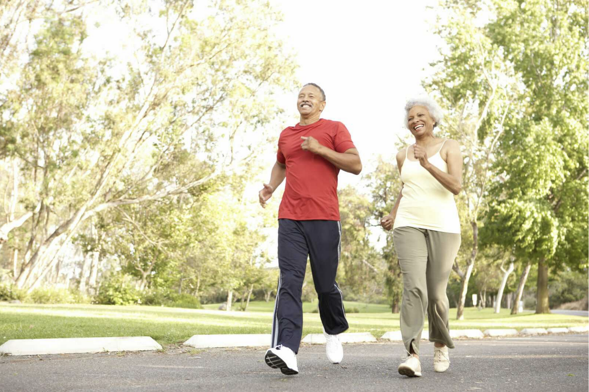

Hobbies
You might think that on the journey to eternal life, all you need is chemicals and serums. While that is true, what is just as important are the everyday habits. At this stage in humanity's progress towards immortality, the little things matter. We are not at the point where it is possible for us to just sit in a TV-mounted scooter while a soda-infused humidifier allows us to breathe our soda in, all while infant blood is pumped into us. We just aren’t there yet.
Hobbies are an intrinsic aspect of longevity. And what is the point of living forever if you don’t have anything to do with the time? I know I don’t want to live forever just to sit around and watch TV all day even though future TV will probably be very good. It shouldn’t be the main focus of your eternal life; it should just be a bonus to getting to live forever. And the bottom line is always your health, and TV is proven to have negative effects on multiple organs, especially the heart (source).
Here is a list of five scientifically proven hobbies that can lower your mortality rate by as much as sixty percent, which translates into about living a year longer.

Gardening
Gardening has been cited many times as the best hobby to extend life. However, it must be said that gardening is commonly cited because the target audience for life-extension hobbies is the elderly, and they can garden with ease.
Some of the main attributes of its effectiveness are its low-intensity exercise and its outdoorness. These are positives, but they are clearly tailored to an older demographic.
Gardening is at the top of my hobbies list for another reason. Gardening allows you to cultivate your own food source. It allows you to ensure that all the food you grow is safely grown and is not contaminated with malfeasance. If you are growing your own food in your own garden, then you are establishing your independence from one more thing that could lead to your downfall.
Gardening is also cute. You can have your peppers over there. And your berries over there. And your greens over there. It lets you just walk outside into your garden and eat right off the vine. It does come back a little to food, but food is important in eternal life.
When making a garden, you have to dig, set things up, look up seeds, and do all types of things that will stimulate your brain. And all this brain stimulation is good.
Volunteering
Volunteering is a great way to live longer. So much research has shown that even volunteering for just a little bit can help extend your life dramatically. Again, this is something that is recommended for older people, but what is commonly missed is that if you begin what is good for you when you are old, it is just as good for you, if not even better, when you’re young.
Video Games
New research is coming out that shows that video games have just as much of a positive effect on the human as does the thing, they would actually be doing in real life outside the video game. For example, if you play a basketball videogame, then you get the same bodily benefits from playing the video game that you would from actually physically playing basketball with your body.
Tennis
Unlike video games, the category of sports must be specific because certain sports are physically dangerous. Many sports need to be avoided. Any sport that has physical contact with other people must be avoided. The positive sports are the ones that value strategy over physical supremacy. A sport like tennis where you are safely a long distance from your competitor is ideal. Other sports allow you to compete in the safety of your bubble, but tennis is particularly good according to scientific research. If we were catering to the older folk like most literature in this field, I would say pickleball or something of that nature.
Listening to Music
This one is included because of the ease. Study after study after study reveals how beneficial the simple act of listening to music is. I am a firm believer in the plague of always needing sonic stimulation, but the introduction of serious music listening is unprecedented. People in the past would have done anything to have the access that we have today to an infinite amount of recorded music. With a little discipline, you can be extending your life minute by minute with intentionality behind your music listening.